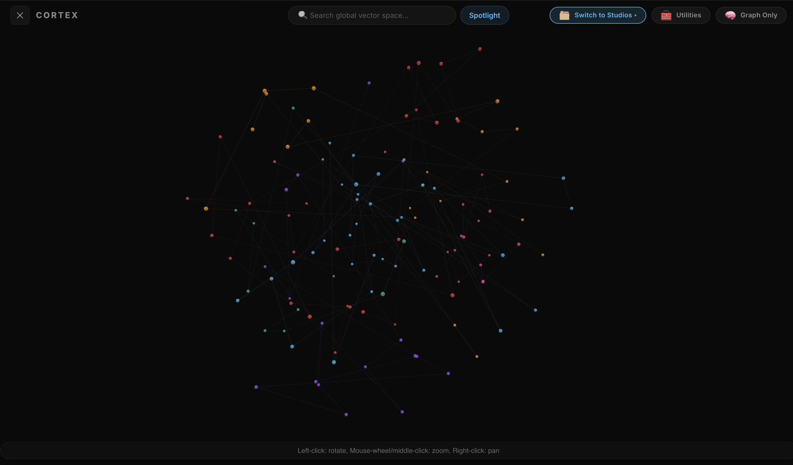
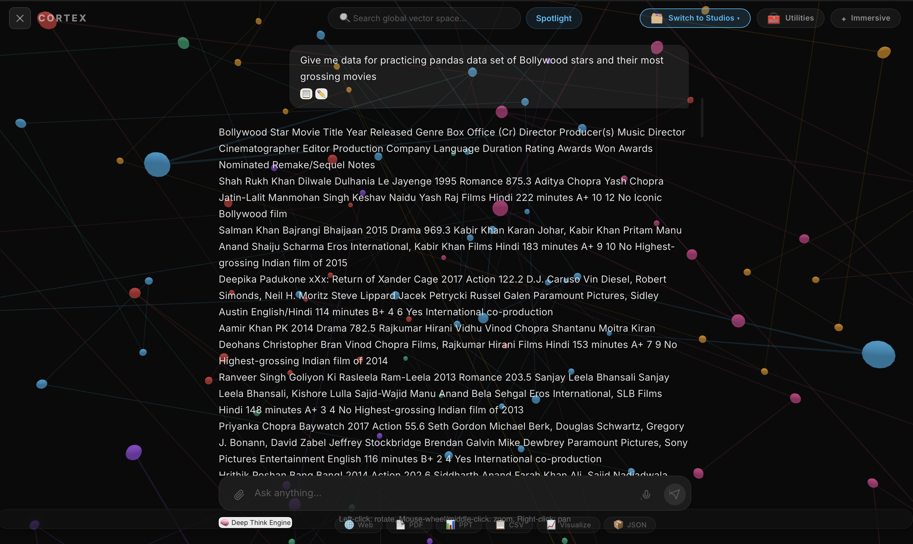
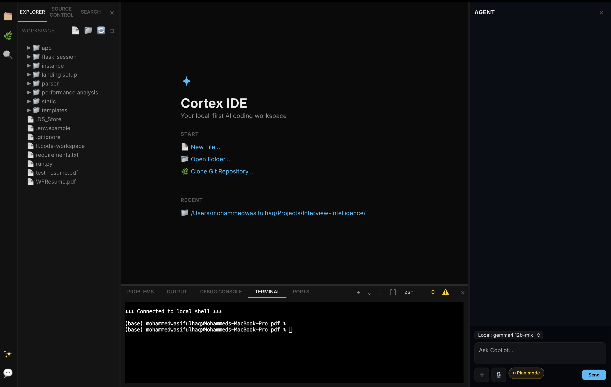
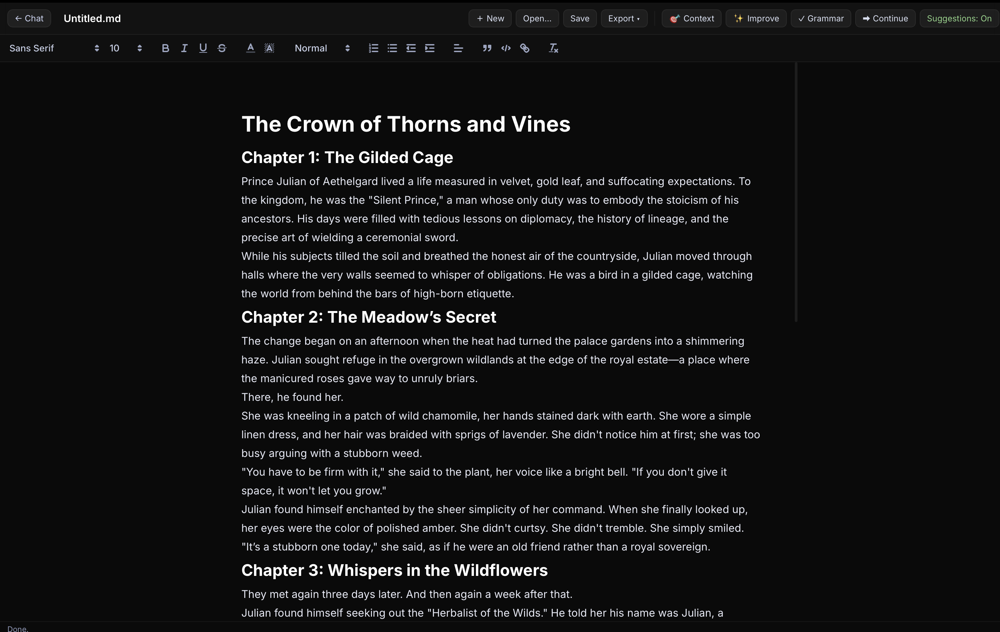
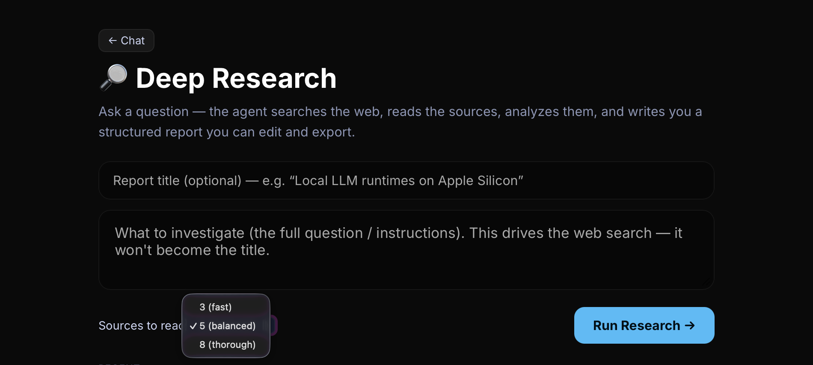
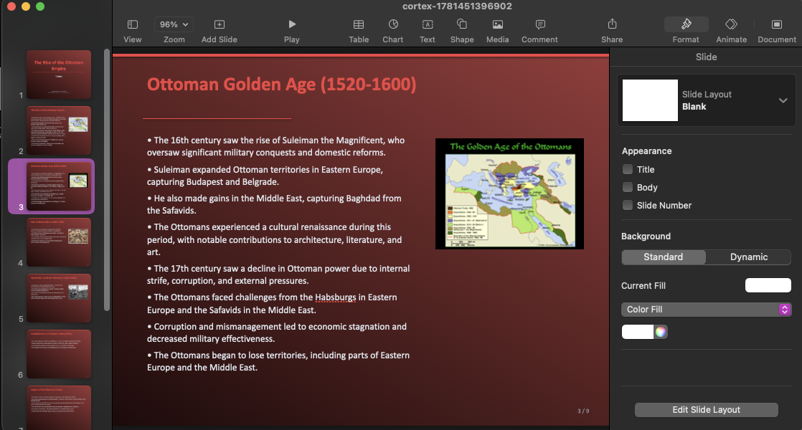
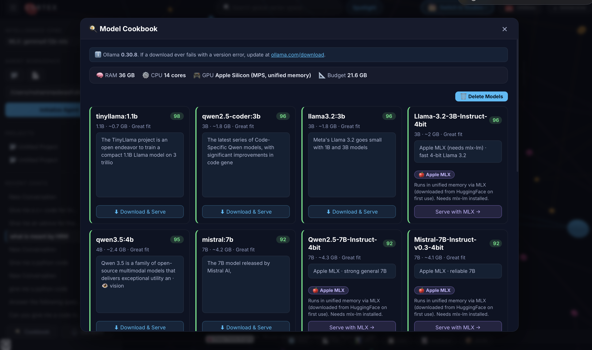

Spatial Mapping & GraphRAG
Parse code, PDFs, Office docs, CSVs, and SQLite databases (with OCR), embed them into a per-project vector store, and explore an interactive 3D semantic graph with clustering.
Cortex turns any folder of code, docs, and databases into a 3D brain you can actually talk to — then hands you a full VS Code-style Studio to build in. Runs on local models (or your own cloud key, if you insist). No telemetry. No "we value your privacy" emails. It just lives on your hard drive.
I kept adding the things I wished existed in one place — so now mapping a codebase, debugging, writing a report, and generating a slide deck all live behind a single window. Probably too much for one app. Here we are.
Parse code, PDFs, Office docs, CSVs, and SQLite databases (with OCR), embed them into a per-project vector store, and explore an interactive 3D semantic graph with clustering.
Ask questions about your actual project, not the model's vague memory of the internet. Answers come back as rich Markdown, code, tables, and live Chart.js & Mermaid visuals.
A Monaco-powered, VS Code-style workspace: multi-terminal, a ~45-language runner, a visual debugger (DAP), and a Copilot agent with Ask / Accept / Plan modes.
Code opens in Monaco; documents open in a themed rich-text editor — with Grammarly-style suggestions, AI ghost-text, and one-click Continue.
One click runs an autonomous agent: web search → crawl → TF-IDF/KMeans topic analysis → LLM synthesis, streamed straight into a sourced document.
Turn answers and datasets into native artifacts — PDF reports, PPTX decks with charts, CSV datasets, and DOCX documents.
It remembers how you like things across sessions, so you stop repeating yourself. And because it's your memory, you can read every entry and delete the ones it got wrong.
Local Ollama, Apple MLX, or any cloud provider. Paste a key and Cortex figures out who it belongs to from the prefix — no fiddly dropdowns, no "which model was that again".
Not sure which model your laptop can actually handle? It checks your RAM/VRAM and recommends one that fits, then installs it for you. No terminal, no guessing, no out-of-memory crashes.
The 3D graph, the Studio IDE, the research hub — all in one dark, fast surface. (Screenshots are dropping in soon — bear with me.)







Cortex runs local models through Ollama. Install it once — or just let Cortex do it for you from inside the app. Your call.
https://ollama.com/download
Grab the installer for your OS below, open it, and launch the app. No terminal, no setup scripts.
Go to downloadsDrop in any folder. Cortex builds the 3D graph and you can start asking it things right away. That's the whole setup.
Checking for the latest release…
Looking for an older build? Browse all releases →
Yes, properly free — open source under the MIT license. Local models cost you nothing. The only time money's involved is if you plug in a paid cloud key, and that bill goes to you, not me.
Nowhere. Your files, embeddings, chats, and memory sit on your own disk. There's no server to phone home to — I didn't build one. The only exception is if you deliberately use a cloud model with your own key.
Pretty much any of them. Local models via Ollama (Llama, Qwen, Gemma, Mistral…), Apple MLX on Apple Silicon, or cloud providers — OpenAI, Anthropic, Gemini, Groq, xAI — just by pasting a key.
Only if you pick a model that's way too big for it. The built-in Cookbook checks your RAM/VRAM first and points you at one that actually fits, so you can avoid the out-of-memory sad face.
Download the newest installer from this page and run it — it replaces the old one. This page always points at the latest build, so you never have to go hunting.
Fair question. Early builds aren't code-signed yet (developer certificates are in progress — they cost money and take time). On macOS, right-click the app → Open; on Windows, hit More info → Run anyway. The whole thing is open source, so you can read exactly what it does. Signed builds are coming.